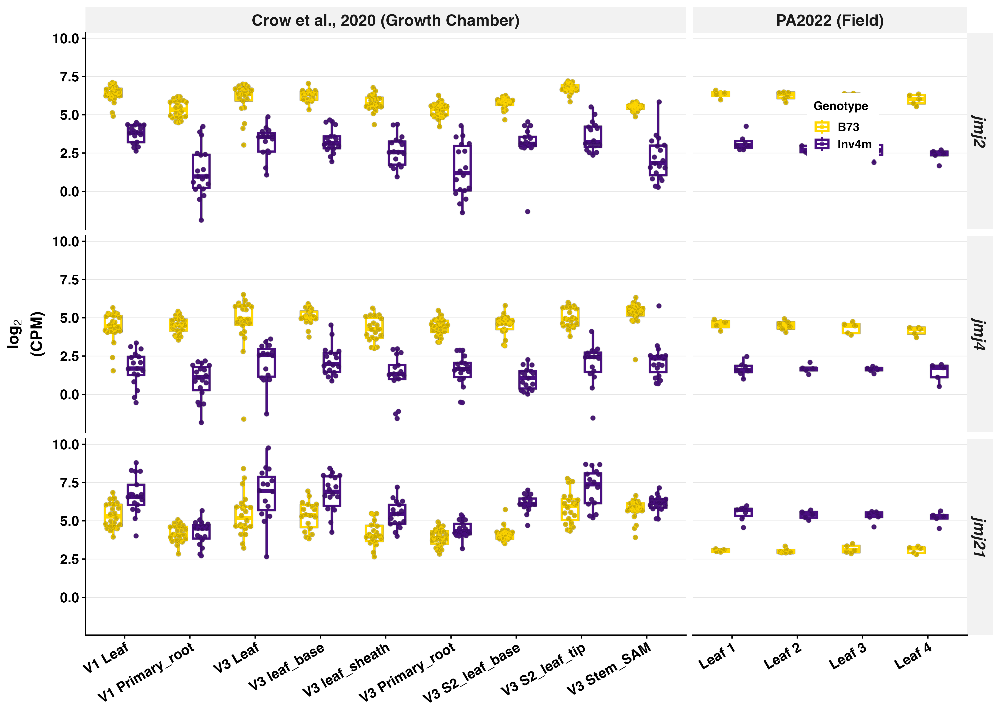

Discussion §JMJ — Comparison for Discussion with Ruben
Purpose: Compare the 2026-05 rewrite of the JMJ Discussion subsection against the pre-Ruben version (currently commented out in main.tex) and lay out the candidate landscape so we can together decide what the §JMJ Discussion should be.
Files:
- Live (Ruben’s rewrite, RE030):
docs/inversion_paper/main.texL845–L887, subsection titleA JUMONJI histone demethylase cluster as the candidate driver of \invfour phenotypes. - Commented out in the same file (pre-Ruben original):
docs/inversion_paper/main.texL917–L942, subsection titleGenomic and functional evidence suggest a link between \jmjii copy number, growth, and flowering time plasticity. - Anchor reference:
main_20260504.texL949.
The expression-direction argument does not hold (added 2026-06-02)
A separate question from “which gene” is “in which direction.” The live §JMJ text argues that because the jmj2/jmj4 cluster is downregulated, flowering should accelerate, “mirroring rice jmj703 loss of function.” This section tests that directional claim against the functional evidence in both demethylase clades for which we have differential expression in Inv4m.
jmj21 identity (resolved). The manuscript’s jmj21 (Zm00001eb190750, +2.28) maps via the B73 v3→v5 crosswalk (data/B73v3_to_B73v5.tsv) to GRMZM2G383210, which is ZmJMJ4 in the maize JmjC phylogeny of Qian et al. 2019 (BMC Genomics 20:256). Naming collision to watch: Qian’s “ZmJMJ4” is the manuscript’s jmj21, not the manuscript’s jmj4. In Qian’s tree, jmj21/ZmJMJ4 falls in the JHDM2/KDM3 (H3K9) subfamily, sister to the Arabidopsis subclade containing IBM1 (AtJMJ25) plus AtJMJ24/26/27/28/29, on weak support (bootstrap 397). So jmj21 is a co-ortholog of the IBM1 group, not a 1:1 ortholog of IBM1; the expansion in this part of the tree is on the Arabidopsis side (one maize gene to six AtJMJ).
Perturbation effects across the two clades with Inv4m DE
| Gene | Clade / mark | Perturbation | Flowering effect | Why (target) | Cite |
|---|---|---|---|---|---|
| OsJMJ703 (rice) | KDM5/JARID1 · H3K4 demeth. | knockdown (↓) | accelerates | — (also stem elongation) | song2019, chen2013 |
| JMJ14 (At) | KDM5/JARID1 · H3K4 | loss (↓) | early | represses FT (an activator) | Lu2010, yang2012a |
| JMJ15 (At) | KDM5/JARID1 · H3K4 | overexpression (↑) | accelerates | represses FLC (a repressor) | yang2012b |
| BdJMJ1 (Brachypodium) | KDM5/JARID1 · H3K4 | loss (↓) | delayed | promotes VRN1, long day | Liu2024 |
| JMJ28 (At) | JHDM2/KDM3 · H3K9 | activator role (present) | promotes | activates CO | hung2021 |
| JMJ27 (At) | JHDM2/KDM3 · H3K9 | loss (↓) | early | represses CO, promotes FLC | dutta2017 |
| IBM1 (At) | JHDM2/KDM3 · H3K9 | loss (↓) | dwarf / developmental (not flowering per se) | prevents ectopic genic H3K9me / silencing | saze2008 |
Reading
Within KDM5/JARID1 (H3K4): loss accelerates flowering (JMJ14, OsJMJ703), but overexpression also accelerates it (JMJ15), and loss delays it in Brachypodium. The same enzyme class produces early flowering from opposite perturbations, and the opposite phenotype from the same perturbation. The JHDM2 (H3K9) clade behaves the same way: JMJ28 promotes flowering, JMJ27 delays it.
The phenotypic direction is set by what the enzyme’s target is (a flowering activator such as FT/CO versus a repressor such as FLC) and the photoperiod/vernalization context — not by the clade, the histone mark, or whether the gene goes up or down. “jmj2/4 is down, therefore flowering accelerates, mirroring OsJMJ703 knockdown” selects the one matching row and ignores JMJ15 (opposite perturbation, same outcome) and Brachypodium (same perturbation, opposite outcome). The live §JMJ text even cites JMJ14-loss and JMJ15-overexpression side by side as supporting the same prediction, which is internally contradictory.
Consequence: the directional claim should be cut. jmj2/4 (down) and jmj21 (up) are each candidates for flowering-time and growth regulation whose orthologs do not predict the sign of the inversion’s effect, because that sign depends on per-target chromatin context we have not mapped. Cut the line “the reduced JMJ dosage in Inv4m NILs would be expected to accelerate flowering, mirroring rice jmj703 loss of function rather than the long day Brachypodium pattern.”
Parallel support for jmj21 (Hung 2021, Dutta 2017)
The same table is the affirmative case for jmj21 as a candidate worth engaging rather than a footnote — but a weaker case than the jmj2/4 cluster, not a co-equal one. Its JHDM2/H3K9 subfamily is functionally validated for flowering time and development by its closest characterized relatives: JMJ27 removes H3K9me1/2 in vitro and in vivo and modulates flowering time and pathogen defense (dutta2017); JMJ28 activates CONSTANS to promote flowering (hung2021); IBM1 prevents ectopic gene silencing, its loss causing developmental defects including dwarfing (saze2008). This is the same class of ortholog evidence the KDM5/JARID1 orthologs provide for jmj2/4 — flowering time and growth, on H3K9 rather than H3K4. It also shows the clean “jmj2/4 = flowering time, jmj21 = growth” split is too tidy: both subfamilies regulate flowering time and development, through different marks.
jmj21’s case is weaker than the cluster’s on three measured axes, and they should not be put on the same footing:
- Lower significance. jmj21 differential expression is FDR ≈ 1.0×10⁻¹⁴ (t ≈ 15.2), versus jmj2 at FDR ≈ 2.5×10⁻²² (t ≈ 27.0) and jmj4 at FDR ≈ 8.5×10⁻²¹ (t ≈ 24.1) — roughly seven to eight orders of magnitude less significant. Still a highly significant DEG, but clearly lower.
- Comparable but smaller effect. jmj21 log₂FC = +2.40, versus jmj2 −3.44 and jmj4 −2.77. Same order of magnitude, but the smallest of the three.
- No GWAS hit of its own. jmj21 has the Crow growth-chamber reproducibility and the ortholog-function support, but no maize GWAS association; the jmj9 silking-plasticity SNPs and the jmj2 plant-height SNP are the cluster’s.
So jmj21 is a candidate among several, with a slightly weaker case on significance and effect size and no independent GWAS support — it belongs in the discussion, but ranked below the jmj2/4 cluster, not beside it.
Expression of all three genes (jmj2, jmj4, jmj21)
The boxplot below (from jmj_cluster_expression_boxplot.Rmd, chunk boxplot_all) shows logCPM for jmj2, jmj4, and jmj21 across both experiments. It makes the comparison concrete: jmj2 and jmj4 are consistently down in Inv4m (purple below gold), while jmj21 is up (purple above gold) with a smaller and noisier separation — the visual counterpart of the smaller effect size and lower significance noted above.

Document generated 2026-05-26. Quotes verbatim from docs/inversion_paper/main.tex at tag anchorhead01 (commit dc5342a). Candidate functional citations: Qin et al. 2023 Plant J (tetraspanins); Peiffer 2014 (sec6 GWAS); Tibbs-Cortes 2024 (jmj9 plasticity SNPs); Chen 2013 / Song 2019 (OsJMJ703); Lu 2010 / Yang 2012a/b (Arabidopsis JMJ14/15); Liu 2024 (Brachypodium JMJ1); Saze 2008 (IBM1 anti-silencing).
The candidate landscape inside Inv4m
The 15.2 Mb Inv4m introgression carries 432 annotated genes. The strongest DEG candidates inside Inv4m proper, by independent evidence axis:
| Candidate | log₂FC (Inv4m vs CTRL) | CNV between haplotypes | Independent functional evidence | Mechanism axis |
|---|---|---|---|---|
| jmj2 / jmj4 / jmj6 / jmj9 cluster | −3.49 (jmj2 representative) | 5:1 (B73:Inv4m) — cleanest CNV story | KDM5/JARID1 H3K4 demethylase ortholog phenotypes: Arabidopsis JMJ14/15, rice OsJMJ703 (stem elongation + flowering acceleration on knockdown), Brachypodium JMJ1 (vernalization caveat). Tibbs-Cortes 2024 plasticity SNPs near jmj9. Plant-height association SNP for jmj2. | H3K4 demethylation / chromatin |
| jmj21 | +2.28 | None (single copy in both haplotypes) — cleanest regulatory signal | JHDM2 family; closest Arabidopsis orthologs JMJ26 / JMJ29; clustered with IBM1 (H3K9 anti-silencing demethylase; loss → BONSAI hypermethylation + developmental defects, suppressed by KYP or CMT3 mutations). | H3K9 demethylation / anti-silencing |
| sec6 (Zm00001eb194380) | +2.87 | Not CNV-driven | Plant-height GWAS candidate (Peiffer 2014) — directly relevant to a phenotype we measured. WGCNA greenyellow module includes sec6 with pcna2 (DNA replication factor) and the cell-polarity regulator ropgef14. Trans-coexpression edge to jmj4. | Exocyst / vesicle trafficking / cell-plate formation in cytokinesis |
| tet2 (Zm00001eb192880) | −6.86 (largest |log₂FC| inside Inv4m) | Not CNV-driven | Qin et al. 2023 Plant Journal (PMID 37955978): OsTET5, OsTET6, OsTET9, OsTET10 rice mutants show plant-height + tillering phenotypes. OsTET13 controls root growth via the jasmonic acid pathway. Direct monocot-ortholog precedent for the plant-height phenotype we measured. | Tetraspanin membrane microdomain scaffold / cell signaling |
Each row carries the exact same evidence class as jmj2 on at least one axis:
- jmj2 has CNV + dosage analysis + cluster-aggregate effect + GWAS plasticity + ortholog phenotypes.
- jmj21 has a cleaner regulatory difference (no CNV) + ortholog phenotypes, but a weaker case overall than the cluster: lower significance (FDR ≈ 1.0×10⁻¹⁴ vs the cluster’s 10⁻²¹–10⁻²²), a comparable but smaller effect (log₂FC +2.40 vs jmj2 −3.44 / jmj4 −2.77), and no GWAS hit of its own. A candidate ranked below the cluster, not beside it.
- sec6 has direct GWAS support for plant height — the exact phenotype, in maize — + WGCNA growth-network membership.
- tet2 has largest effect size in the introgression + direct rice-ortholog evidence for plant height.
Plus a linkage-drag caveat that applies to all four: 432 genes in 15.2 Mb plus the flanking introgression. Even when a candidate is mechanistically compelling, we cannot exclude that other linked loci contribute.
What Ruben’s RE030 (L845–L887) says vs what the pre-Ruben version (L917–L942) said
Both versions cover JMJ. They differ in scope, in how much they commit to a single candidate, and in their treatment of the limitations.
| Topic | Ruben’s RE030 (live, L845–L887) | Pre-Ruben (commented, L917–L942) |
|---|---|---|
| Subsection title | “A JUMONJI histone demethylase cluster as the candidate driver of Inv4m phenotypes.” Definite-article, singular candidate. | “Genomic and functional evidence suggest a link between jmj2 copy number, growth, and flowering time plasticity.” Hedged “suggest a link”. |
| Multi-copy reasoning | Not stated. Goes directly from “5:1 copy number difference” to the dosage-expectation analysis. | L923: “The high sequence identity among B73 paralogs (>97%) is evidence for recent tandem duplication and has two implications: if the paralogs have functionally diverged, their similar sequences would confound individual expression attribution; if they remain functionally equivalent, the five copy state in B73 effectively represents a dosage increase relative to the single copy highland genomes.” States both possibilities before committing to either. |
| Methodological framing of the dosage test | L851: presents the 49–61% / 48–83% numbers and concludes “additional layer of regulatory suppression”. | L924: “We therefore conservatively tested whether Inv4m expression deviates from the 1/5 dosage expectation rather than attempting to resolve individual paralog contributions.” Explicit about what we can and cannot measure given the annotation. |
| Engagement of other strong DEG candidates inside Inv4m (sec6, tet2, jmj21) | Mentions sec6 in the trans-coexpression / WGCNA paragraph (L884) but does not present it as a parallel candidate; treats it as a downstream target. tet2 absent. jmj21 absent. | jmj21, sec6, and tet2 not engaged either. (Pre-Ruben also has this gap.) |
| Cytokinin axis / Bellegarde 2025 / IPT3 reasoning | Present (L854–L856, L862). Adds the Arabidopsis cytokinin-biosynthesis precedent and a maize parallel (Nii2 in trans-network). | Absent. |
| Subsection closing | L879: “these observations position the JMJ cluster as a candidate driver of a coordinated developmental program coupling chromatin regulation, meristem geometry, and post-floral-transition growth.” | L942: “Our microsynteny analysis provides this structural explanation and, together with the environment-dependent suppression and independent GWAS support, positions the JMJ cluster as a candidate for the environment-dependent flowering and growth phenotypes we observed.” Same verb, different object: “candidate for the phenotypes we observed” vs “candidate driver of a coordinated developmental program”. |
Net: Ruben’s version brings the Bellegarde 2025 cytokinin axis and a clearer narrative; the pre-Ruben version preserves the multi-copy interpretive scaffold and methodological honesty about what we can and cannot measure. Both versions miss sec6 and tet2 as parallel candidates and fail to engage the linkage-drag caveat directly.
Style flags in Ruben’s RE030 (recurring lab style memo: no hype superlatives)
The lab style memo feedback_no_hype_superlatives.md flags certain phrasings for being overclaim. Ruben’s RE030 carries several:
| Line | Phrase | Why flagged |
|---|---|---|
| Title L845 | “the candidate driver” (definite article + singular) | Implies a single causal locus identified. The Discussion that motivates further studies should hedge: “a candidate”, or “among several candidates”. |
| L864 | “thus emerges as a recurring axis through which KDM5/JARID1 demethylases couple environmental input to growth” | “Emerges as an axis” is an overenthusiastic LLM tell. The user has seen and removed this construction from LLM suggestions repeatedly. Cut. |
| L879 | “position the JMJ cluster as a candidate driver of a coordinated developmental program” | “Coordinated developmental program” is an abstract noun we did not demonstrate. Our data show correlated phenotypes (height + flowering + SAM elongation) but no measurement of mechanistic coupling. |
| L883 | “consistent with reduced expression attenuating rather than rewiring the gene pairs they normally coordinate” | “Normally coordinate” assumes a regulatory function we did not establish. |
| L864 (paragraph) | “a regulatory hub whose perturbation propagates through the transcriptome” | Three problems at once. (i) “Regulatory hub” — operationally hub-ness in this paper = high intramodular connectivity (kWithin). jmj2/jmj4 had kWithin ≈ 3.2 in CTRL but dropped ≈ 80% to ≈ 0.6 in Inv4m. They lost hub status in the inverted karyotype, which is the opposite of what the present-tense framing implies. (ii) “Whose perturbation propagates” — the kWithin label-permutation test reports that all 30 genes in the pink module lose connectivity in Inv4m (100% affected). That is module-wide co-shifting with genotype, not “JMJ perturbation propagated to the rest”. The analysis did not measure causal direction. (iii) “Propagates through the transcriptome” — the trans-coexpression network is a Pearson correlation analysis with FDR-filtered pairwise edges. Correlation, not propagation. The sentence uses causal/directional language for a correlation analysis. |
The network analyses were designed as candidate-evaluation tools
The WGCNA module analysis, the kWithin label-permutation test, and the trans-coexpression network analysis were each designed to answer a specific candidate-evaluation question:
| Analysis | Candidate-evaluation question it was designed to ask |
|---|---|
| WGCNA modules + bootstrap support | Which Inv4m DEGs cluster with which other DEGs into coherent expression modules? Which modules are biologically coherent (GO enrichment)? — used to group candidates by inferred functional context. |
| kWithin label-permutation test | Which modules show genotype-specific connectivity disruption beyond sample-to-sample variability? — used to ask which candidates sit in modules whose internal coexpression structure is changed by Inv4m, vs which sit in modules whose structure is preserved. |
| Trans-coexpression network (MaizeNetome-anchored) | Which DEGs inside Inv4m proper coexpress with which growth-related targets outside the inversion? — used to identify candidate cis regulators whose effect plausibly cascades to trans targets. |
The pre-Ruben Discussion subsection (commented out) was the synthesis that articulated these analyses as a candidate-evaluation strategy and reported their integrated outcome: JMJ as a candidate, in the pink module that showed connectivity loss, with trans-network links to sec6 and pcna2 in the greenyellow module. Ruben’s RE030 (live) keeps the analyses’ results in the §3.5–§3.6 Results but uses them in the Discussion only to reinforce the JMJ-as-the-driver narrative (“regulatory hub whose perturbation propagates”). The analyses’ purpose as candidate-evaluation tools — the reason they were done at all — is lost.
This matters because:
- It is the difference between focus (a defensible editorial choice — pick one candidate, sustain a narrative) and oversimplification (RE030’s net effect — keep the apparatus, lose the interpretive frame, leaving the figures decorative).
- It removes the reader’s ability to evaluate alternatives. If the analyses were designed to compare candidates, then the Discussion that does not name and weigh the alternatives leaves the reader with the figures but not the question they answered.
- It obscures what sec6 and the greenyellow module contribute. sec6 is upregulated, in the greenyellow module with pcna2 (DNA replication), connected in trans to jmj4. Each of those is a specific candidate observation the trans-network was designed to surface. None of them are engaged as independent candidates in RE030.
What the measured framing looks like
This paper is hypothesis-generating. It motivates further functional studies. The Discussion that matches the data would:
- Engage jmj2, jmj21, sec6, and tet2 as candidates (note the plural) with different strengths — not pick one as “the driver”.
- Carry the linkage-drag caveat directly: 432 genes in the inversion, we cannot exclude that other linked loci contribute to the phenotypes.
- Use “suggestive but not decisive”, “candidate among several”, “case for further studies”, “we cannot exclude”. Avoid definite-the constructions (“the candidate driver”, “the mechanism”, “the regulatory hub”) for inferences we did not directly measure.
- Restore the multi-copy reasoning at L923 (or an equivalent statement) so the dosage-expectation analysis has its interpretive scaffold.
- Restore the methodological framing about not being able to resolve per-paralog expression with the NAM v5 annotation (the L924 caveat).
- Optionally keep the Bellegarde 2025 / IPT3 reasoning since it is a real piece of mechanistic precedent worth citing.
This is the framing the user’s pre-Ruben Discussion already had (e.g., L1022: “is one candidate among many within the introgression for contributing to the observed phenotypic effects”). The case below is for restoring it, not for inventing it.
Where we go from here
This document is the basis for a conversation, not a unilateral edit decision. Possible end states:
- Restore the pre-Ruben subsection in full (uncomment L917–L942, comment out L845–L887), then expand to engage sec6 + tet2.
- Build a hybrid that takes the structural scaffold (multi-copy reasoning, methodological honesty) from the pre-Ruben version and the Bellegarde 2025 cytokinin reasoning from Ruben’s version, then expands to engage sec6 + tet2 + linkage-drag caveat.
- Keep Ruben’s version and rewrite locally to (a) drop the hype phrases, (b) restore the multi-copy scaffold, (c) engage sec6 and tet2 as parallel candidates, (d) acknowledge linkage drag.
The first two require Ruben’s agreement that “the candidate driver” framing overreaches. The third keeps his structural choices but reins in the claim strength.